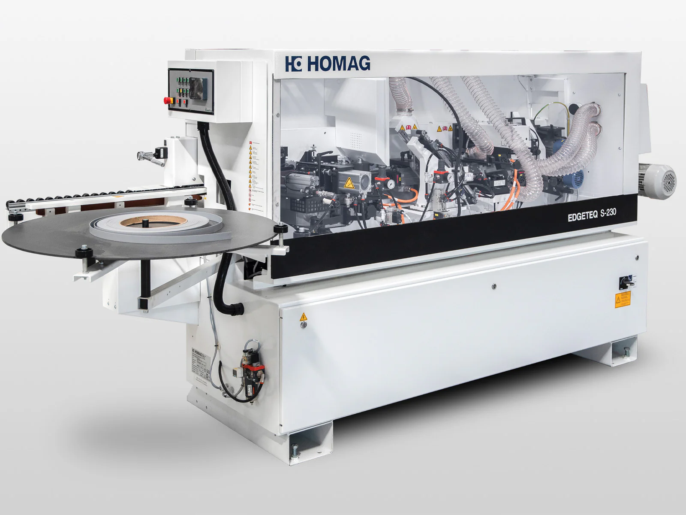
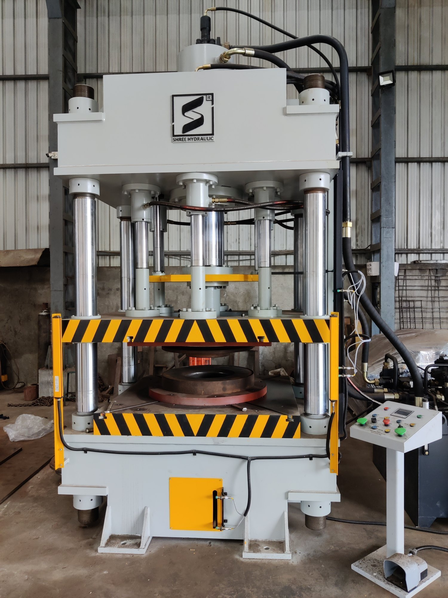
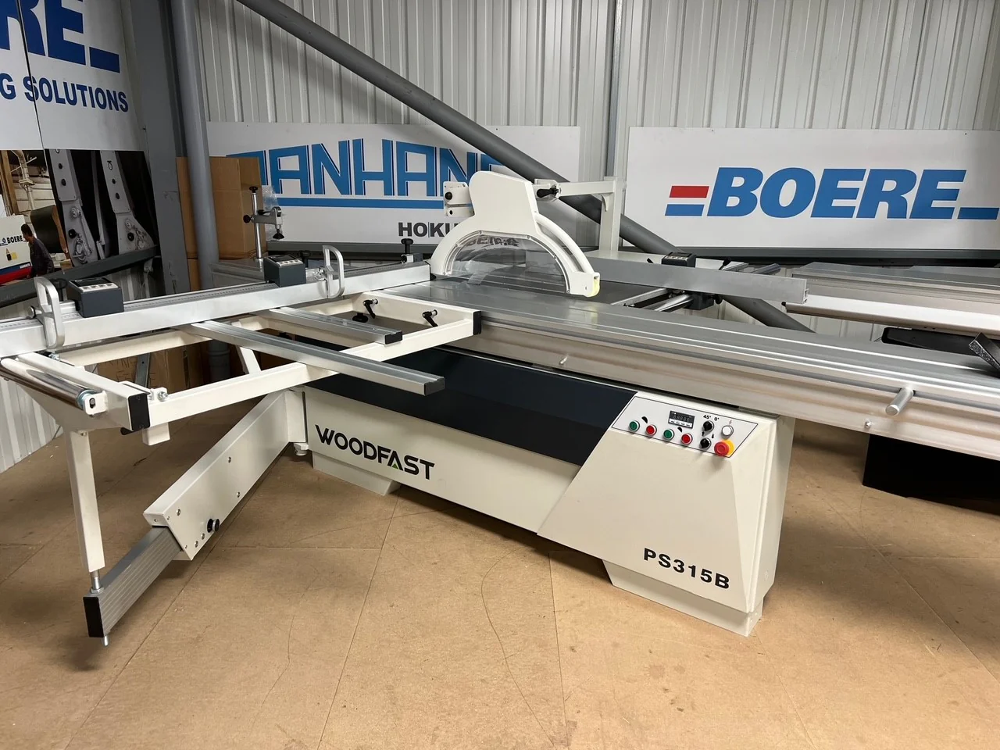
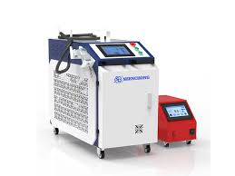

Machine Catalog
-
CNC Wood Router

- Power
- 3.0 kW
- Price
- 22,000
- CNC Router
- Used for cutting, carving, and shaping wood and soft metals with high precision.
-
Iron Bending Machine

- Power
- Hydraulic
- Price
- 35,000
- Iron Bending Machine
- Designed to bend and shape metal bars and sheets efficiently.
-
Laser Cutter

- Power
- 60W CO2
- Price
- 18,500
- Laser Cutter
- Uses a focused laser beam for accurate cutting and engraving.
-
Edge Banding Machine
- Power
- 5.0 kW
- Price
- 15,000
- Edge Banding Machine
- Applies edging to materials like plywood or particleboard.
-
CNC Lathe

- Power
- 7.5 kW
- Price
- 30,000
- CNC Lathe
- Rotates a workpiece to perform sanding, cutting, or drilling.
-
Hydraulic Press
- Power
- Hydraulic
- Price
- 12,000
- Hydraulic Press
- Uses a hydraulic cylinder to generate a compressive force.
-
Panel Saw
- Power
- 4.0 kW
- Price
- 9,500
- Panel Saw
- Designed to cut large sheets of wood into smaller sized sections.
-
Laser Welding Machine
- Power
- 1500W
- Price
- 25,000
- Laser Welding Machine
- Uses a laser beam to join pieces of metal or thermoplastics.
-
Sheet Metal Bender

- Power
- Hydraulic
- Price
- 28,000
- Sheet Metal Bender
- Specialized for bending sheet metal with high precision.
Machine Demonstration Video
Watch a demonstration of our CNC and industrial machinery in action.